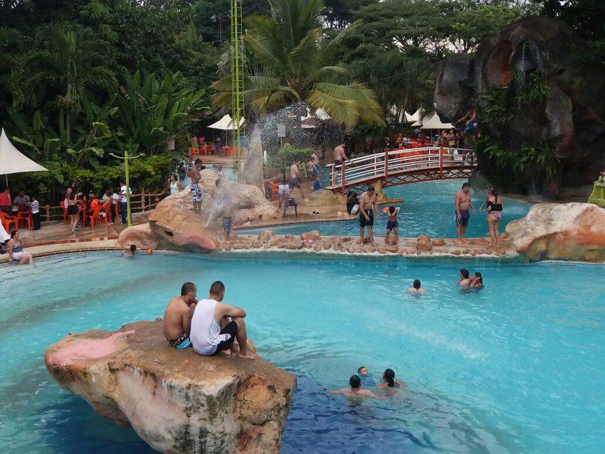
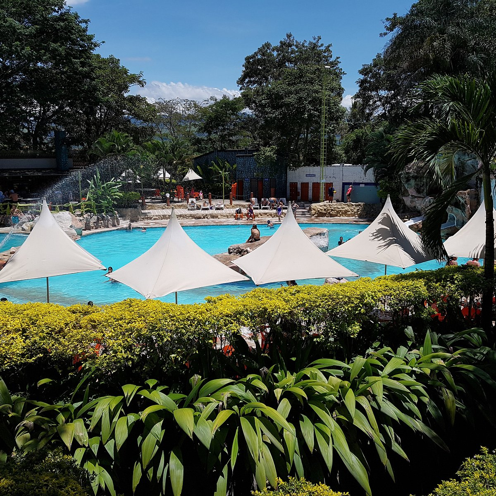
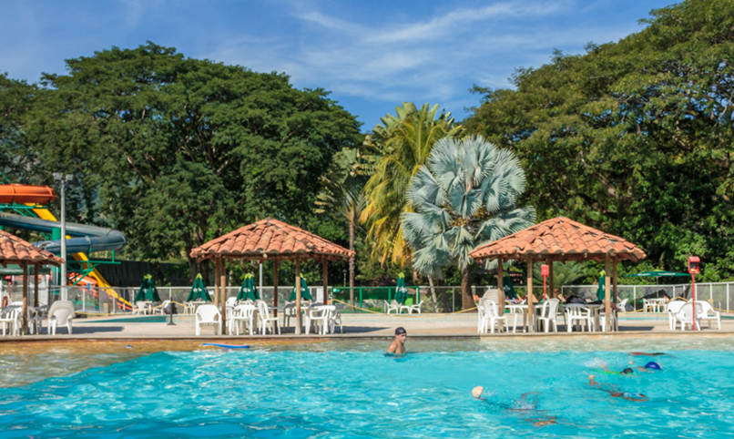

Balneario Los Farallones
La Virginia, Risaralda




Descripción
El Balneario Los Farallones es un centro recreativo ubicado en La Virginia, Risaralda. Ofrece múltiples piscinas y zonas de esparcimiento, siendo un lugar ideal para el descanso y la diversión familiar en un entorno natural y tranquilo.
Características
- 🌊 Piscinas para adultos y niños
- 🌳 Amplias zonas verdes
- 🍽️ Restaurante in situ
- 🏊♂️ Áreas de descanso
- 🚗 Parqueadero
- 👶 Zona infantil
- ⛱️ Zonas de camping
Horarios y Precios
Horario:
8:00 AM - 6:00 PM
Días:
Martes a Domingo
Entrada:
$15.000 COP
Restaurantes cercanos
-
Restaurante del Balneario Los Farallones
- Ubicación: Dentro del balneario
- Especialidades: Platos típicos colombianos
- Mojarra roja y hamburguesas
- Ideal para disfrutar sin salir del centro recreativo
-
Kijani Rooftop Bar Restaurante
- Especialidades: Cocina americana y fusión
- Destacado por su ambiente y vistas panorámicas
-
Mia Piccola Italia
- Especialidades: Auténtica comida italiana
- Ambiente acogedor
-
40 Grados
- Especialidades: Sudamericana y colombiana
- Conocido por su heladería y variedad de platos
-
La Fondita de García
- Especialidades: Platos latinos y españoles
- Ambiente familiar
-
Restaurante La Victoria
- Especialidades: Cocina sudamericana y colombiana
-
Choriasados Cálidosos y Sabroso
- Especialidades: Platos típicos colombianos
- Ambiente informal
Alojamientos cercanos
-
El Paraíso Hotel Campestre
- Ubicación: La Virginia
- Servicios: Piscina, bar, sala de juegos
- Ideal para familias y grupos que buscan un ambiente campestre
-
Coconi Hotel Campestre
- Ubicación: La Virginia
- Servicios: Desayuno incluido, piscina y restaurante
- Opción cómoda para los visitantes del balneario
-
Sonesta Hotel Pereira
- Servicios: Spa, piscina y restaurante
- Hotel de alta categoría a pocos minutos en coche
-
Hotel Spa La Colina
- Servicios: Spa y servicios de bienestar
- Ambiente tranquilo cerca de La Virginia
-
Sazagua Hotel Boutique
- Tipo: Hotel boutique
- Combina confort y elegancia en entorno natural
- Ubicado en las cercanías de La Virginia